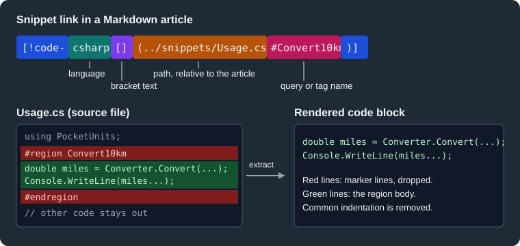

Markdown
|
This content was generated with the assistance of AI and should be verified against the official documentation before being relied on in production. |
This page was written against DocFX 2.81.0 (the latest release, published on 2026-09-25) and checked on 2026-10-26.
Every example was built with docfx 2.81.0 inside the mcr.microsoft.com/dotnet/sdk:10.0 Docker image, using the
default and modern templates, and the rendered output of the modern build was opened in a browser to see whether
Mermaid and math diagrams appear. The articles are the conceptual (hand-written) content of the Pocket Units site; the
generated API reference is covered in .NET API Docs.
What DocFX Flavored Markdown is
DocFX reads CommonMark-compliant Markdown through the Markdig parsing engine. On top of CommonMark it adds its own syntax, usually called DocFX Flavored Markdown or DFM: a YAML header, alerts, includes, code snippets that pull code from other files, tabs, video embeds and diagram blocks. Because these extensions are specific to DocFX, other renderers such as GitHub show them as plain text or as an ordinary block quote. The official page warns that previewing a file in a GitHub Flavored Markdown preview can therefore look different from the published site.
A few Markdig extensions are switched on by default: mathematics, emphasis extras (strikethrough), auto identifiers
(heading anchors in the GitHub style), media links, pipe tables, auto links and emoji. Any other built-in Markdig
extension is enabled by name in docfx.json, under build.markdownEngineProperties.markdigExtensions. A project that
embeds DocFX as the Docfx.App NuGet package can instead configure the Markdig pipeline in code through the
ConfigureMarkdig build option.
{
"build": {
"markdownEngineProperties": {
"markdigExtensions": [ "Footnotes", "Abbreviations" ]
}
}
}Source: DocFX docs: Markdown
The example above was built with only Footnotes listed, and a Markdown footnote ([^1]) rendered as a numbered
reference with a footnote section at the end of the article. The Markdown page of the official documentation also
carries a note saying that custom configuration of extensions through this property is not supported, which contradicts
both the docfx.json reference (it describes the same property with a FootNotes example) and the build that was run; treat
the working behaviour as authoritative for the extensions listed by name, and test extensions that need options.
The remaining sections follow the order in which the syntax is usually needed. The keys of markdownEngineProperties
belong to the build section of the configuration file, described in
docfx.json.
The Pocket Units articles
The examples use a small article folder next to the API reference of Pocket Units:
docs/
docfx.json
toc.yml
index.md
articles/
toc.yml
tour.md
includes/
requirements.md (reusable fragment, excluded from the build)
snippets/
Usage.cs (code that articles quote)
convert.py
src/PocketUnits/ (the C# library)The configuration used for every build in this page is below. The exclude entry keeps the fragments in includes
out of the published pages, and template lists default first and modern second so that the modern files win.
{
"metadata": [
{
"src": [{ "src": "src", "files": ["**/*.csproj"] }],
"dest": "api"
}
],
"build": {
"content": [
{ "files": ["api/**.yml", "api/index.md"] },
{ "files": ["articles/**.md", "articles/**/toc.yml", "toc.yml", "*.md"] }
],
"resource": [{ "files": ["images/**"] }],
"exclude": ["includes/**"],
"output": "_site",
"template": ["default", "modern"],
"markdownEngineProperties": {
"alerts": { "PLANNED": "alert alert-secondary" },
"markdigExtensions": ["Footnotes"]
}
}
}The commands that produced the output shown below were docfx --version (it printed 2.81.0+ba844df...) and
docfx docfx.json, run in the folder that holds docfx.json. The metadata stage restored and read the project, and
the build stage printed its warnings; a successful run ends with Build succeeded with warning. when there are
warnings and with Build succeeded. otherwise.
YAML header and uid
The YAML header (also called YAML front matter) annotates a Markdown file with metadata. It is a block delimited by
--- lines at the very top of the file. Any key from the predefined metadata list of the docfx.json reference can be
used in it, and front matter has the highest priority among the metadata sources: it wins over fileMetadata, which in
turn wins over globalMetadata.
---
uid: PocketUnits.Tour
title: Markdown tour
description: A tour of DocFX Flavored Markdown features.
---
# Markdown tourSource: DocFX docs: Markdown
The uid is a unique identifier of the file inside the project, used by cross-references (<xref:PocketUnits.Tour>
or @PocketUnits.Tour, covered in Links and Cross
References). Three rules from the documentation matter in practice:
-
If two files declare the same
uid, which one a reference resolves to is undetermined, so keep UIDs unique. -
API reference files get their UID from the mangled signature of the member (the UID of
System.StringisSystem.String), so you never write those by hand. Open a generated YAML file to see the value. -
A conceptual Markdown file has no UID unless it declares one, so it cannot be a target of a cross-reference until you add the header. In the built page, the
articleelement carries the value asdata-uid; the page above rendered<article data-uid="PocketUnits.Tour">, and a file without the key rendereddata-uid="".
Alerts
Alerts are block quotes that the templates render with a colour and an icon according to their significance. The
syntax is a block quote whose first line is the alert keyword in [!KEYWORD] form:
> [!NOTE]
> Information the user should notice even if skimming.
> [!TIP]
> Optional information to help a user be more successful.
> [!IMPORTANT]
> Essential information required for user success.
> [!CAUTION]
> Negative potential consequences of an action.
> [!WARNING]
> Dangerous certain consequences of an action.Source: DocFX docs: Markdown
The five built-in keywords are NOTE, TIP, IMPORTANT, CAUTION and WARNING. The keyword is matched without
regard to case (a block written with [!Warning] rendered as a warning), and a keyword that is not known is not an
alert: > [!foo] stayed an ordinary block quote and printed the literal text [!foo], without a warning. The built page
turned > [!NOTE] into the following HTML:
<div class="NOTE">
<h5>Note</h5>
<p>Lengths are converted through metres.</p>
</div>Custom alerts
A project defines its own alert types with the build.markdownEngineProperties.alerts property. The key is the keyword
without the surrounding [! and ], and the value is the CSS class names that go on the generated div:
{
"build": {
"markdownEngineProperties": {
"alerts": {
"PLANNED": "alert alert-secondary"
}
}
}
}> [!PLANNED]
> Add temperature units.The build rendered this as <div class="alert alert-secondary"> followed by <h5>PLANNED</h5>. By default the title of an
alert is its keyword in upper case. To change a title, the official page says to create a custom template (see
Templates and Customization) and add a token.json
file to it, whose keys are the alert keywords in lower case and whose values are the titles to display. That
customisation was not executed here.
Source: DocFX docs: Markdown
An alert is a block extension: the content on the same quoted lines is part of the alert. Text that is indented by four spaces after the keyword line becomes a code block inside the alert in DocFX, whereas GitHub shows it as a paragraph in a block quote.
Video and images
A block quote whose keyword is Video embeds a video from the link that follows it:
> [!Video https://www.youtube.com/embed/Sz1lCeedcPI]Source: DocFX docs: Markdown
The build produced a div with the class embeddedvideo that wraps an iframe whose address was rewritten to the
youtube-nocookie.com host with rel=0. Images use the ordinary Markdown syntax, ;
files that are referenced must be inside a resource mapping of the build (the sample configuration lists
images/**), otherwise they are not copied to _site.
Math expressions
DocFX renders LaTeX math through MathJax. An inline expression is delimited by single dollar signs, and a block expression by double dollar signs on a line of its own:
Inline math $\sqrt{3x-1}+(1+x)^2$ and a block:
$$d_\text{m} = d \cdot f_\text{unit}$$Source: DocFX docs: Markdown
The official documentation states that math is only supported in the modern template. That is what the two builds
showed. The HTML of both templates contains <span class="math">\(...\)</span> elements. In the modern build the
page also loads the bundled MathJax script from its public folder, and the browser replaced both spans by
mjx-container elements (two were found on the page). The default build loads no MathJax script, so its spans keep
the raw \(...\) text.
Mermaid diagrams
A fenced code block whose language is mermaid becomes a diagram:
```mermaid
flowchart LR
A[Kilometre] -->|x 1000| B[Metre] -->|/ 1609.344| C[Mile]
```Source: DocFX docs: Markdown
As with math, this works only in the modern template. Both builds emit the same HTML,
<pre><code class="lang-mermaid">...</code></pre>. With modern the page loads the bundled Mermaid runtime (the
public folder contained the Mermaid core and one script per diagram type, so no CDN is needed) and the browser
converted the block into an element pre.mermaid holding an svg. With the default template no Mermaid script is
loaded and the visitor sees the diagram source in a code block. Every diagram type that Mermaid supports can be used,
for example pie, Gantt, user journey and class diagrams; DocFX does not restrict the language.
PlantUML diagrams
A fenced block with the language plantuml is rendered as an image. The block below is a complete sequence diagram of
one line:
```plantuml
Bob -> Alice : hello
```Source: DocFX docs: PlantUML Diagrams
In the build above this produced a div of class lang-plantUml with the diagram as an inline svg element, and it
appeared with both the default and the modern template, because the picture is made at build time and not in the
browser. By default the
drawing is requested from the public PlantUML server, so the build needs network access. The settings live under
build.markdownEngineProperties.plantUml:
| Setting | Meaning | Default |
|---|---|---|
|
|
|
|
Address of the PlantUML server, needed only in remote mode |
|
|
|
|
|
Path to |
Looked up in the project directory |
|
Path to the Graphviz |
None |
|
Path to the Java installation |
The |
{
"build": {
"markdownEngineProperties": {
"plantUml": {
"localPlantUmlPath": "path/to/plantuml.jar",
"renderingMode": "local"
}
}
}
}Source: DocFX docs: Markdown
Local rendering was not executed here, because it needs a Java runtime and a PlantUML jar that the SDK image does not
contain. For documentation that must build offline, or that contains private diagrams, use local, since in remote
mode the text of every diagram is sent to the configured server.
Includes
An include replaces a reference with the contents of another Markdown file at build time, which avoids repeating a paragraph in several articles. There are two forms. The block form sits alone on its line and inserts a whole file between the paragraphs around it. The inline form is part of a sentence:
[!INCLUDE [requirements](../includes/requirements.md)]
Inline: before [!INCLUDE [requirements](../includes/requirements.md)] after.The text in square brackets is a title (the official page describes it as the name of the file), and the path in parentheses is relative to the file that contains the include.
The fragment file itself must be kept out of the build, usually by placing it in a folder named includes and listing
that folder in build.exclude. When the entry "exclude": ["includes/**"] was removed and includes/**.md was added to the content
mapping, DocFX published _site/includes/requirements.html as a stand-alone page next to the real articles; with the
exclusion in place no such file exists. The fragment still resolves for the including article because includes are read
from disk, not from the list of built files.
If the target does not exist, the build warns and leaves the text of the include in the page:
/w/articles/more.md: warning include-not-found: Invalid include link: '../includes/missing.md'.The rendered paragraph then shows [!include[missing](../includes/missing.md)] literally, so a broken include is easy to
spot in a preview but it does not fail the build unless warnings are treated as errors (see
CLI).
Code snippets
A code snippet link inserts code from another file, so the examples in an article are real, compilable source that is tested and reformatted with the rest of the project. The link is a block that stands alone on its line:
[!code-<language>[](<filepath><query-options>)]The parts are the language (the Markdown highlighting identifier, such as csharp), a bracket text (empty in the official examples), the path of the file relative to the article, and an optional selector. A title
can be added in quotes after the selector, as in [!code-csharp[](Usage.cs#L9-L10 "Title here")]; the build put it on
the generated element as a title attribute.

The figure shows how the parts of a link map to the extraction of a tagged region from a source file.
The Pocket Units source files
The articles quote two files. Usage.cs carries a region, a pair of tag comments and a second tagged block, and
convert.py carries a tag comment in Python:
using PocketUnits;
// <imports>
using System.Globalization;
// </imports>
#region Convert10km
double miles = Converter.Convert(10, LengthUnit.Kilometre, LengthUnit.Mile);
Console.WriteLine(miles.ToString("F3", CultureInfo.InvariantCulture));
#endregion
// <roundtrip>
double back = Converter.Convert(miles, LengthUnit.Mile, LengthUnit.Kilometre);
Console.WriteLine(back.ToString("F3", CultureInfo.InvariantCulture));
// </roundtrip>from pocket_units import convert
# <py_convert>
print(round(convert(10, "km", "mi"), 3))
# </py_convert>Source: DocFX docs: Code Snippet
Selecting lines
Four selectors choose which lines of the file appear. Each can be written in the # form or the ?name= form, and the
build printed what the comments below say:
<!-- region declared with #region and #endregion -->
[!code-csharp[](../snippets/Usage.cs#Convert10km)]
<!-- tag comment, written as a query -->
[!code-csharp[](../snippets/Usage.cs?name=roundtrip)]
<!-- lines 9 and 10 of the file, 1-based -->
[!code-csharp[](../snippets/Usage.cs#L9-L10)]
<!-- lines 5 to 7 and line 9, with the second and third of those highlighted -->
[!code-csharp[](../snippets/Usage.cs?range=5-7,9&highlight=2-3)]
<!-- a single line, then an explicit start and end -->
[!code-csharp[](../snippets/Usage.cs?start=9&end=10)]Source: DocFX docs: Code Snippet
The first link printed two lines, the body of the region, without the #region and #endregion lines:
double miles = Converter.Convert(10, LengthUnit.Kilometre, LengthUnit.Mile);
Console.WriteLine(miles.ToString("F3", CultureInfo.InvariantCulture));The rules, taken from the documentation and from the DocFX source code (the CodeSnippet folder of
Docfx.MarkdigEngine.Extensions), are:
| Selector | Result |
|---|---|
|
The lines between the start and end marker of the tag. The marker lines are not included. Tag names may contain letters, digits, dots, hyphens and underscores, and are matched without regard to case. |
|
Lines 12 to 16 of the file, counting from 1, both included. Because it is a plain line range, marker lines inside the range are shown. |
|
A list of lines or line ranges. The |
|
Lines from |
|
Marks lines of the output for highlighting: lines 2, 5 to 7 and 9 to the end of the snippet. The generated |
|
Number of leading characters removed from each line. Without it, the common indentation of the selected lines is
removed; |
Query options can be combined with &. In the build, a body indented eight spaces inside a namespace and a class was
printed flush left by default, and with ?name=body&dedent=0 it kept all eight spaces.
Tag syntax by language
A tag is a pair of marker lines written as a comment of the language of the file, which is what lets the same syntax work in C#, Python or XML. The marker format is chosen from the file extension, using the table in the DocFX source:
| Languages | Start marker | End marker |
|---|---|---|
C#, Visual Basic and C-like languages such as Java, JavaScript, TypeScript, Go, Rust, Swift, C and C++ |
|
|
C# regions |
|
|
Visual Basic comments |
|
|
Visual Basic regions |
|
|
XML, XAML, HTML and Handlebars |
|
|
Python, PowerShell, Perl, R, Ruby, shell |
|
|
SQL, Haskell and Lua |
|
|
CSS |
|
|
Batch files |
|
|
Erlang and MATLAB |
|
|
Lisp |
|
|
The matching ignores white space between the characters of a marker, so // <name> and //<name> are the same. For
C# and Visual Basic regions the end marker does not name the tag, so the nearest open region is closed. The language
used to pick the marker format comes from the file extension of the path, and aliases are understood (for example cs
for csharp, py for python and js for javascript). When the extension is not known, DocFX tries a default
language and may not find the tag; the range and start/end selectors do not depend on markers.
The generated HTML for a snippet is a pre with a code whose class is lang- plus the language you wrote, so it is
highlighted by the template’s highlighter like any fenced block.
Errors and warnings
Three situations produce messages that are easy to miss in a long build log:
| Situation | Message in the build log | Result in the page |
|---|---|---|
The file or tag cannot be found |
|
A |
The language is not one DocFX knows |
|
The snippet is rendered with the class |
A query option that DocFX does not know, such as ?bogus=1, is silently ignored by the parser: the link was accepted and
the whole file was inserted, with no warning at all. Per the source, option keys are compared in lower case, but a misspelled key is
not reported, so check the first build of every new snippet.
The DocFX source also recognises [!notebook-...] links that select a named cell of a Jupyter notebook in the same way,
but the Markdown page of the official documentation does not describe them, so this page does not rely on them.
Tabs
Tabs show one of several variants of a section and remove duplicated content. A tab starts with a heading whose only
content is a link to #tab/id; its text becomes the tab title, and the content goes up to the next tab heading or to
the end marker:
# [Linux](#tab/linux)
Linux content.
# [Windows](#tab/windows)
Windows content.
---Source: DocFX docs: Tabs
All tabs on a page that share the same id stay in sync: choosing windows in one group selects windows in every
other group of the page. The build turned the example into a div.tabGroup containing a ul of a elements with
role="tab" and a section with role="tabpanel" per tab, and the unselected panels were marked hidden. After the
page was opened in the browser the address bar showed ?tabs=linux%2Cdotnet, so the selected tab ids are written to the
tabs query parameter so the selection is kept in the address.
The end of a tab group is marked by a horizontal rule. The documentation text says to use ***, while all of its examples
use ---; both ended the group in the build (a group ended with *** and the following paragraph was outside
the tabs). Use --- as the examples do, and leave a blank line before and after it. The official examples write every tab heading as a level-one
heading (#).
Dependent tabs
A group can make one set of tabs depend on the selection of another. Add a second id after the tab id: #tab/dotnet/linux
is the .NET tab that is visible when the linux tab is selected in the earlier group.
# [.NET](#tab/dotnet/linux)
.NET content for Linux.
# [.NET](#tab/dotnet/windows)
.NET content for Windows.
# [Python](#tab/python)
Python content for every platform.
---Source: DocFX docs: Tabs
In the HTML, the two .NET tabs carry data-tab="dotnet" and data-condition="linux" or "windows", and the one that does
not match the current condition is hidden by aria-hidden="true". The Python tab has no condition, so it is always
shown, and it is the one whose content does not vary with the platform.
Build-time processing
The sequence below summarises what happens to the extension syntax in a docfx build. Includes and snippets are
resolved at build time by reading files on disk, alerts and tabs become HTML structure, and only Mermaid and math are
completed later by the browser, which is why they need the modern template’s scripts.
with DFM syntax"] --> PARSE["Markdig parser
with DocFX extensions"] INC["includes/*.md
snippets/*.cs"] -->|"read from disk"| PARSE PARSE --> HTML["HTML in _site"] HTML -->|"modern template"| BR["Browser runs Mermaid
and MathJax"] HTML -->|"default template"| RAW["Mermaid and math stay
as source text"]
Mermaid flowchart of the processing of DocFX Flavored Markdown at build time and in the browser.
Pitfalls and version notes
-
Use the
moderntemplate for Mermaid and math. Iftemplatelists onlydefault, the diagram stays a code block and math stays as raw\(...\)text, with no warning at build time. -
Exclude fragments that are only meant for
[!INCLUDE]from the build, or they become pages of their own. -
A snippet that cannot be resolved is a warning, not an error, and the page still builds with an in-page "sample does not exist" notice. Run
docfx buildwith warnings treated as errors in CI. -
Markdown that uses DFM extensions renders differently on GitHub. Do not rely on a repository preview to judge the result.
-
A tab heading consists of a single link whose target starts with
#tab/; anything else is an ordinary heading. -
An alert keyword that is neither one of the five built-in ones nor defined in
alertsleaves a plain block quote. -
The PlantUML default sends diagram text to a public server; switch to
localfor private content or offline builds. -
DocFX 2.81.0 documents its Markdown features on a single page; nothing on that page is marked with the release that added it, so check the release notes of DocFX on GitHub when an older version lacks a feature.